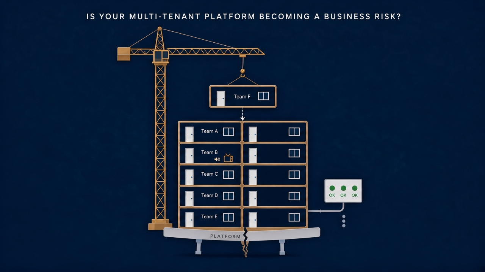

Is your multi-tenant platform becoming a business risk?
"AI broke the internet" is a phrase that comes around these days. One example is github having some serious difficulties, a major part of it being the increase in commits and pull requests due to AI-generated code. Marek Šuppa decided to build its own github status page because the official one seems to significantly under-report bad statuses; it is available here: https://mrshu.github.io/github-statuses/ (BTW, this page has a link to a very interesting video, I would encourage you to watch it).
What does this have to do with your multi-tenant platform? Just like github, scaling up (especially if it's a rapid scale-up) might reveal weakensses in your architecture, potentially leading to negative impacts on your business. Everything might run fine at the moment, but are you reasonably certain it will still run fine if you double the number of tenants? Every time you add a tenant, you add some configuration, resources and workloads, and open up more ingress and egress paths. A solution to this is to load-test your platform: add a large number of fake tenants generating a lot of activity, and observe what happens. It might be enlightening, especially regarding quotas you might hit on AWS.
At NatWest Bank, I implemented canaries (continuous health checks) to ensure the metrics path works end-to-end at all time. These checks revealed that about 5% of metrics were silently lost and that it has been this way for months without anybody noticing. Fortunately, the platform was still under development and not in production, so the business impact was very limited (something to be said about "shift left", I guess!). If a production incident had occurred just when these metrics went missing, it would have been much more difficult for the incident response team to investigate and in all likelihood would have required escalation to the platform team itself. The prolonged downtime would have had a significant impact on the business, especially since this platform is running business-critical services used continuously by the bank's corporate customers. Such an incident and delayed resolution would have had a significantly impact the bank's reputation.
So your platform might break just by adding apps and tenants. What about the changes your platform teams pushes to it? As any piece of software, a multi-tenant platform needs maintenance: upgrading components, implementing new features, fixing bugs, patching discovered vulnerabilities, etc. Any of this can break your platform and negatively impact your business. This can be mitigated by using a grading of environments (for exampe: dev, qa, staging, prod), quality gates and extensive functional and non-functional testing. Promotions to higher environments should be managed carefully, for example by running the new platform version for 24h on a lower environment before allowing promotion to the next higher environment.
If you are not confident your platform can withstand the small sample of issues I listed above, it might be time for you to consider getting it reviewed by a specialist.